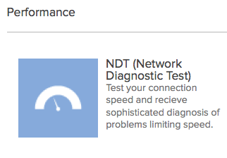
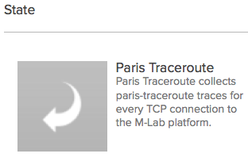

{% extends "_case-studies.html" %}
{% set case_id = 8 %}
{% block challenge %}
 Eine zuverlässige und schnelle Internetverbindung ist essentiell für eine produktive Wirtschaft und eine
ungehinderte private Internetnutzung. Da der Internetmarkt erstens enorm intransparent ist, und weil zweitens
empirische Daten zur Auslastung der Infrastruktur fehlen, fällt es jedoch nicht nur Laien sondern auch Experten
schwer, Probleme mit der Internetverbindung zu diagnostizieren.
Eine zuverlässige und schnelle Internetverbindung ist essentiell für eine produktive Wirtschaft und eine
ungehinderte private Internetnutzung. Da der Internetmarkt erstens enorm intransparent ist, und weil zweitens
empirische Daten zur Auslastung der Infrastruktur fehlen, fällt es jedoch nicht nur Laien sondern auch Experten
schwer, Probleme mit der Internetverbindung zu diagnostizieren.
{% endblock %}
{% block solution %}
Measurement Lab (mLab), bietet die Möglichkeit, mithilfe verschiedener Instrumente die Leistungsfähigkeit des
privaten oder gewerblichen Breitbandanschlusses mit Blick auf Geschwindigkeit, Drosselung oder Überlastung zu
analysieren. Die Vielzahl der Daten, die durch diese einzelnen Tests generiert werden, stellt das mLab zur offenen
Nutzung zur Verfügung. Auf diese Weise wird ein reichhaltiger Datenschatz über die Netzwerkinfrastruktur zur
Verfügung gestellt. Diesen nutzen Forschungsinstitute und andere Akteure, um auf Probleme aufmerksam zu machen und
die Rahmenbedingungen für eine schnelle und störungsfreie Internetverbindung zu verbessern.
{% endblock %}
{% block datasets %}
mLab verwendet Daten, die Nutzerinnen und Nutzer generieren, indem sie ihre jeweilige Internetverbindung testen.
Diese werden auf den Servern von mLab gespeichert und über Google Cloud Storage als offene Rohdaten zur Verfügung
gestellt. mLab betreibt über 100 Server in den USA, Europa, Australien und Teilen von Afrika und Asien.
{% endblock %}
{% block benefitters %}
Von den Daten und darauf basierenden Analysen profitieren politische Entscheidungsträger, die Wirtschaft,
Wissenschaft, gemeinnützige Organisationen und Verbraucher; kurz gesagt alle, die ein Interesse an einer guten
Leistungsfähigkeit des Internets haben.
{% endblock %}
{% block outcome %}
Timothy arbeitet in einer New Yorker Bank und ärgert sich seit Wochen, dass das Internet scheinbar deutlich
langsamer läuft. Dies verzögert alle Arbeitsabläufe und erschwert die Zusammenarbeit mit den Tochterbanken weltweit.
Er weiß aber nicht, ob die Ursache die Internetverbindung, das Programm der Bank oder etwas ganz anderes ist. Als er
am Wochenende seiner Schwester davon erzählt, gibt diese ihm den Tipp, eine Analyse mit mLab zu erstellen. Diese
Seite gibt Nutzerinnen und Nutzern die Möglichkeit, ihre Internetverbindung zu testen und so Probleme zu
identifizieren.

Die meistgenutzte Anwendung von mLab ist der Netzwerk-Diagnostik-Test. Der Test erzeugt einen synthetischen
Datenstrom zwischen dem Computer des Testenden und dem nächsten verfügbaren mLab-Server. Es entsteht also nur ein
“künstlicher” Datenstrom und kein Austausch personenbezogener Daten der Nutzer. mLab analysiert dann das Verhalten
zwischen Computer und dem Server, und stellt das Ergebnis dem Nutzer zur Verfügung.
Timothys Bank beschloss, einen Netzwerk-Diagnostik-Test durchzuführen. Auf Basis dieser Ergebnisse konnte sie sich
besser mit ihrem Internetanbieter darüber verständigen, warum es zu Engpässen kam. Der wiederum profitiert von den
mLab-Tests, weil er durch die kumulierten Testdaten seinen Service unter Umständen verbessern kann und so
zufriedenere Kunden hat.
Die Analyseinstrumente von mLab können in drei Kategorien zusammengefasst werden:
-
 Leistung: Hier werden grundsätzliche Leistungskriterien eines Netzwerks erfasst, wie Geschwindigkeit,
Reaktionszeiten, oder Schwankungen.
Leistung: Hier werden grundsätzliche Leistungskriterien eines Netzwerks erfasst, wie Geschwindigkeit,
Reaktionszeiten, oder Schwankungen.
-
Transparenz: Diese Analyse gibt Einblick in das Netzwerk-Management, wie zum Beispiel eine Sperre oder
Drosselung für ein spezielles Programm oder Anwendung.
-
Zustand: Diese Instrumente liefern Informationen über den Zustand des Netzwerks und der Webhosting-Umgebung.
Als Timothy abends seinen Freunden von mLab erzählt, sind diese begeistert. Auch bei ihnen zu Hause ist das Internet
zurzeit deutlich langsamer als gewohnt. Timothy erklärt ihnen die Webseite und zeigt, wie sie auf ihren privaten
Computern oder mobilen Geräten ihre Internetverbindung testen können. Besonders praktisch: Interaktive
Visualisierungen informieren über Geschwindigkeit von Upload, Download oder Paketübertragung und ermöglichen auch
den Vergleich verschiedener Anbieter in einer Stadt.
Diese akkumulierten Testdaten werden außerdem auf den Servern von mLab gespeichert und über die Plattform Google
Cloud Storage als Rohdaten zur Verfügung gestellt. Diese offenen Daten ergeben so die größte Fülle an Rohdaten über
Internetleistung weltweit.

Vor allem die Wissenschaft profitiert von diese Daten. Timothys Schwester Dorothy ist Professorin an der Princeton
University und erforscht die Effektivität von Breitband-Infrastrukturen. Dazu nutzt sie die offenen Messdaten des
Netzwerk-Diagnostik-Tests von mLab, um gemeinsam mit anderen Forscherinnen und Forschern neue Analyse-Instrumente zu
entwickeln. Sie erstellt damit nicht nur wissenschaftliche Studien über Netzwerktests, sondern erarbeitet auch
zusammen mit einer Arbeitsgruppe der amerikanischen Regierung Politikvorschläge für die Entwicklung und Aufstellung
leistungsstarker Netzwerke.

Die Daten erlauben es insofern, im enorm intransparenten Internetmarkt ein unabhängiges Bild aufzuzeigen und
Transparenz über mögliche Konflikte herzustellen oder ungleiche Verteilung zwischen Regionen aufzuzeigen. 2014
konnte durch die Analyse des mLab-Teams gezeigt werden, dass ein Telekommunikationsprovider in den USA im Zuge von
Verhandlungen mit einem weiteren Telekommunikationsprovider den Datenaustausch zwischen den beiden Netzen
systematisch drosselten, um so die Vertragspartner unter Druck zu setzen. Die Analyse führte zu einer breiten
öffentlichen Diskussion über diese Datendrosselung und verdeutlichte den Bedarf an größerer Transparenz, um
Konflikte dieser Art erkennen und die Internetnutzer vor Missbrauch schützen zu können.
{% endblock %}
{% block shortinfo %}
Steckbrief
Gründung: 2008
mLab ist ein Konsortium von Forschern, Firmen und öffentlichen Institutionen. Es wurde gegründet vom New America
Open
Technology Institute (OTI), dem PlanetLab Consortium, Google Inc. und akademischen Forschern, unter anderem von der
Princeton University.
{% endblock %}
{% block sources %}
Offizielle Seite:
https://www.measurementlab.net/
Überblickspapier:
https://www.measurementlab.net/publications/M-lab-2pager-2014.pdf
ISP Interconnection and its Impact on Consumer Internet Performance - A Measurement Lab Consortium Technical
Report:
https://www.measurementlab.net/publications/isp-interconnection-impact.pdf
{% endblock %}